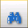

IQ-järjestelmän
näyttö
Jos olet yhteydessä 963 Serveriin graafisessa tilassa, Laitenäyttö mahdollistaa tulojen, lähtöjen, säätöjen, aikavyöhykkeiden ja kriittisten hälytysten näytön järjestelmän valitusta osasta. Esim. jos valitaan internet-työskentely, kaikki internet-työskentelyn arvot näytetään. Jos valitaan yksittäinen Lan, vain kyseisen Lanin arvot näytetään. Näytölle tuotavat arvot voidaan suodattaa tyypin mukaan (tulot, lähdöt, säädöt, aikavyöhykkeet ja kriittiset hälytykset).
Laitenäytön näyttäminen:
Muodosta yhteys 963 Serveriin.
Kirjaudu sisään antamalla käyttäjätunnuksesi ja salasanasi ja napsauttamalla Kirjaudu sisään. 963 Server Aloitussivu tulee näkyviin. Tältä sivulta pääset kaaviosivuille ja Laitenäyttöön sekä, jos olet oikeutettu näkemään hälytykset, myös Hälytysnäyttöön.
Napsauta Laitenäyttö. Laitenäyttö avautuu erilliseen ikkunaan.
Kaksoisnapsauta toimipaikkaa, joka sisältää näytettävät arvot.
Kaksoisnapsauta toimipaikkaa, Lania tai laitetta, joka sisältää näytettävät arvot.
Napsauta yhtä tai useampaa painiketta kohteiden näyttämiseksi. Valitut kohteet näytetään eri värillä.
Valitse kaikki tulot napsauttamalla Tulot, tai valitse kaikki säädöt napsauttamalla Säädöt, tai valitse kaikki lähdöt napsauttamalla Lähdöt. Kaikki valitun tyyppiset kuvakkeet muuttuvat punaisiksi. Tyhjennä kaikkien tulojen valinta napsauttamalla Tulot, tai tyhjennä kaikkien säätöjen valinta napsauttamalla Säädöt, tai tyhjennä kaikkien lähtöjen valinta napsauttamalla Lähdöt.
Jos haluat suodattaa näyttöä lisää, syötä tarvittava hakuehto Haku-ruutuun ja napsauta

. Tämä painike saa 963:n näyttämään vain valitun tyyppiset kohteet, joiden tunnus vastaa hakumerkkijonoa. Tähteä "*" voidaan käyttää jokerimerkkinä tarkoittamaan mitä tahansa merkkiä.
Normaalisti arvot päivittyvät 30 s välein, mutta ne voidaan päivittää myös manuaalisesti napsauttamalla  . Arvoja voidaan säätää napsauttamalla säädettävää arvoa hiiren oikealla painikkeella ja napsauttamalla sitten Muuta pisteen arvoa. Arvoista saadaan trendikäyrä napsauttamalla arvoa hiiren oikealla painikkeella ja napsauttamalla sitten Piste(et) trendinä.
. Arvoja voidaan säätää napsauttamalla säädettävää arvoa hiiren oikealla painikkeella ja napsauttamalla sitten Muuta pisteen arvoa. Arvoista saadaan trendikäyrä napsauttamalla arvoa hiiren oikealla painikkeella ja napsauttamalla sitten Piste(et) trendinä.